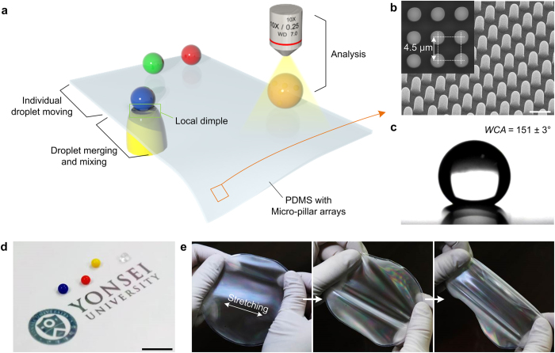

연구 배경과 분류
초록에서 액적 조작과 SERS·세포 전달 응용을 확인했다. 물방울 접착은 조직 접착과 다르며 칩–배선 접합 실증도 아니므로 integration 기초로 유지한다.
경계 분류: 탐색을 위해 가장 가까운 주제를 배정했습니다. 분류 근거와 교차 연관을 함께 읽어야 하며, 주 테마만으로 연구 범위를 한정할 수 없습니다. 기초 연구의 분류는 직접적인 바이오전자 응용을 입증하지 않습니다.
연구 개요와 핵심 성과
진공으로 PDMS 미세기둥 기판에 국소 함몰을 만들어 접착과 경사를 바꾸고 물방울 이동·병합·혼합을 제어한다.
국소 기하 변화를 프로그래밍 가능한 액적 조작으로 연결하고 SERS·세포 siRNA 전달에 적용했다.

국소 함몰로 물방울을 이동·병합·분석하는 미세기둥 PDMS 플랫폼과 기판 특성입니다.
Jungmok Seo, Seoung-Ki Lee, Jaehong Lee 외. “Path-programmable water droplet manipulations on an adhesion controlled superhydrophobic surface”. Figure 1. DOI: 10.1038/srep12326. CC BY 4.0. 공개 원본 이미지 파일을 바이트 변경 없이 복사했습니다. 크기 변경·자르기·주석·재인코딩은 하지 않았습니다.
남은 과제
편집 질문: 시료 조성·부피 변화와 잔류물 축적이 경로 재현성을 바꾸는가?
비교 조건
액적 부피, 점도·표면장력, 기둥 형상, 진공 조건과 분석/세포 평가를 분리한다.
관련 외부 연구
Bioinspired self-repairing slippery surfaces with pressure-stable omniphobicity
SLIPS의 윤활 계면과 #24의 건식 액적 이동을 비교한다.
윤활액 혼입 가능성과 능동 경로 제어는 서로 다른 평가 항목이다.
초록 확인교신저자 확인
서정목 비교신 확인아래는 서정목의 교신저자 여부에 관한 확인 기록입니다. 저자 순서나 별표만으로 판정하지 않으며, 본문 내용 검증과 별도로 읽어야 합니다.
- 교신 고지 확인 출처 ↗
Jong-Hyun Ahn: xref ref-type="corresp" rid="c1"; Taeyoon Lee: xref ref-type="corresp" rid="c2"; * These authors contributed equally to this work.
contrib-group correspondence xrefs, author-notes/corresp c1–c2 and fn n1 · Named publisher author/correspondence information or public published-PDF contact block read; selected body/figure scope is recorded separately.
- 본문 확인 범위
- 출판사/PMC 본문의 라이선스와 Figure 1 전체 캡션을 실제 읽고 원그림을 시각 확인했습니다. 관련 본문을 선택적으로 읽었으며 방법·보충자료 전체를 검토한 것은 아닙니다.
- 보충자료 확인 범위
- 이번 그림·교신저자 검토에서는 보충자료를 읽지 않았으며, SI 전체 검토를 완료했다고 주장하지 않습니다.
- 남은 확인
- 학교 Chrome에서 액적 제어 반복성과 세포·SERS 대조 실험을 확인한다. 이번 단계는 대표 그림·권리·교신저자 확인입니다. 기존 선택 본문/초록 검토를 논문 전체 방법·보충자료 심화 검토 완료로 올리지 않습니다. 확인된 서정목 교신 논문이 아니므로 이번 심화 우선 대상이 아닙니다.
COVERAGE & OUTREACH
보도와 소개
논문과의 연관성을 확인한 소개 자료입니다. 언론 게재는 독립 취재나 실험 결과의 추가 검증을 뜻하지 않습니다.
[Acceptance] “Path-programmable water droplet manipulations on an adhesion controlled superhydrophobic surface” ↗
논문 제목과 서정목 주저자·이재홍 공저자와 Scientific Reports 표기를 대조했다.
본문 확인 개별 공개 공지의 날짜와 짧은 채택 안내 본문을 읽었다. 연구실 자체 공지이며 독립 취재로 집계하지 않는다.
근거와 확인 범위
Crossref 등록 초록과 Europe PMC의 PubMed 초록을 읽었다. 본문·보충자료는 미검토다.
- 원본 공개 논문 목록 ↗ · #24 · 2026-10-03
- Crossref metadata ↗: Crossref에 등록된 공개 서지 메타데이터만 확인했습니다. 출판사 페이지·초록·본문을 읽었다는 뜻이 아니며, 학교 Chrome 전문 검증은 보류입니다. 수동 대조 결과 관사 an 및 surface/surfaces 차이를 확인했습니다. 동일 논문을 가리키는 경미한 서지 표현 차이로 판정했으며 원본값은 유지했습니다. license_urls는 등록된 링크 목록이며 본문·그림 재배포 허가를 의미하지 않습니다. TDM 또는 게시 정책 링크가 포함될 수 있습니다.
- Crossref — publisher-supplied abstract ↗
publisher_registered_abstract_via_Crossref · message.abstract; actually read 2026-10-03; publisher full text not implied - Europe PMC — PubMed abstract record ↗
public_abstract_via_Europe_PMC_API · resultList.result[0].abstractText; DOI matched; read 2026-10-03